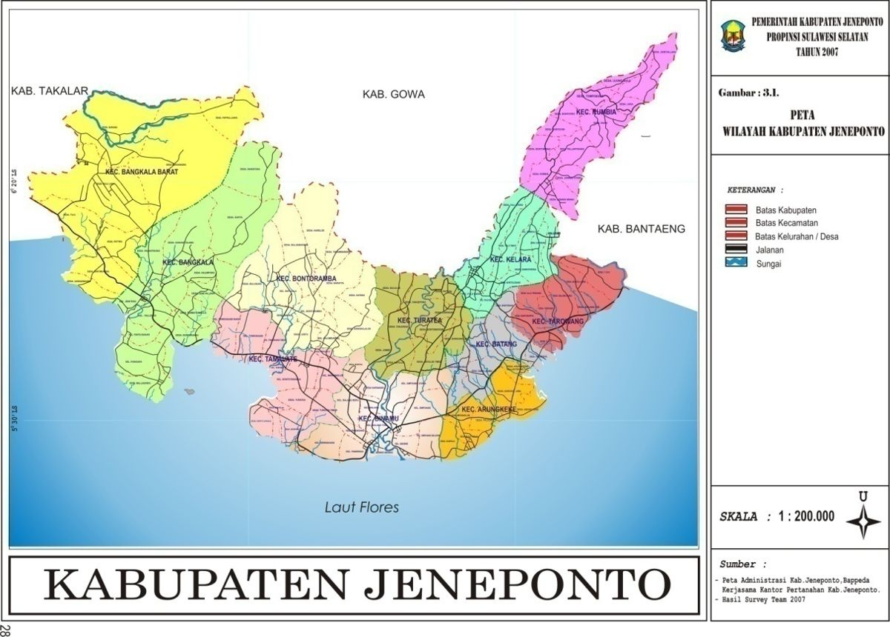
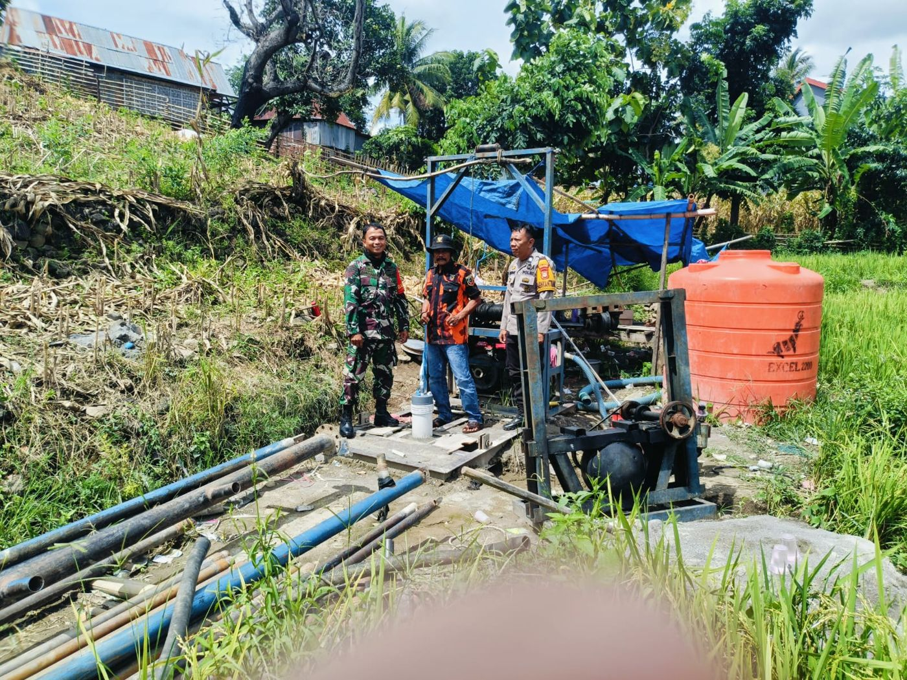
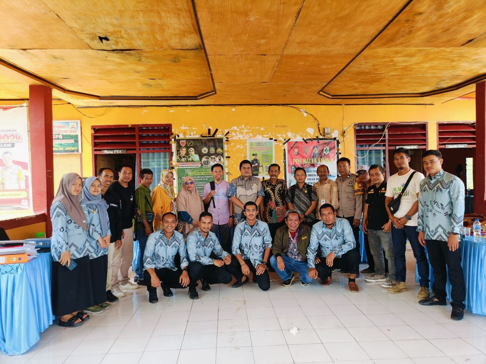

Kepala Desa
- Kepala DesaIskandar S.
- Masa jabatan2022–2027
- Wilayah6 dusun
Dibantu sekretaris desa, kepala urusan, kepala seksi, dan kepala dusun.
Desa agraris di Kecamatan Bontoramba, Kabupaten Jeneponto, Sulawesi Selatan. Enam dusun, satu semangat gotong royong: sipakatau, siri' na pacce.

Mewujudkan tata kelola pemerintahan yang bersih, transparan, dan bertanggung jawab.
Assalamu'alaikum warahmatullahi wabarakatuh.
Selamat datang di website Desa Tanammawang. Website ini kami hadirkan sebagai sarana keterbukaan informasi bagi seluruh warga dan masyarakat luas: profil desa, data kependudukan, arah pembangunan dalam RPJMDes 2022–2027, hingga kegiatan pemerintah desa.
Pembangunan desa adalah kerja bersama. Dengan semangat gotong royong yang masih kuat di tengah warga, kami mengajak seluruh masyarakat untuk ikut mengawal pembangunan menuju Desa Tanammawang yang mandiri dan sejahtera.
Wassalamu'alaikum warahmatullahi wabarakatuh.
Pada tahun 1980-an, status wilayah yang sebelumnya disebut Bori berubah menjadi Desa. Tanammawang kemudian berjalan sebagai desa persiapan di bawah kepemimpinan H. Manai, hingga menjadi desa definitif dan membenahi struktur pemerintahan desanya.
Sejak itu, kepemimpinan desa berganti melalui pemilihan kepala desa. Iskandar S. terpilih pada periode 2016–2021 dan kembali dipercaya warga untuk periode kedua, 2022–2027.
Masyarakat Tanammawang dikenal ramah, tekun, dan rajin bekerja. Budaya saling membantu masih hidup, terutama saat hajatan pernikahan, sunatan, atau duka. Warga membawa sumbangan berupa uang, beras, atau pakaian (passalingan), yang kelak dikembalikan saat penyumbang punya hajatan. Jalan tani sepanjang 2 km di tengah persawahan dibangun secara swadaya oleh warga.
Sumber: tokoh masyarakat, dikutip dalam Profil dan RPJMDes Desa Tanammawang 2022–2027.
Tanammawang berada di dataran yang subur untuk tanaman pangan dan hortikultura, dengan sebagian wilayah berupa perbukitan. Sungai Lombu Raya dan bendungan Tanammawang menjadi sumber air utama pertanian.

Data hasil pendataan SDGs Desa Tanammawang tahun 2020.
2.300 jiwa dalam 710 kepala keluarga: 1.105 laki-laki dan 1.195 perempuan.
| Dusun | KK | Laki-laki | Perempuan | Jiwa | |
|---|---|---|---|---|---|
| Jumlah | 710 | 1.105 | 1.195 | 2.300 |
Kelompok usia produktif 18–45 tahun berjumlah 1.047 jiwa, hampir separuh penduduk desa.
Jumlah warga menurut pendidikan terakhir yang ditamatkan. Sebagian kecil warga belum melanjutkan ke SMA atau perguruan tinggi karena faktor ekonomi.
Mayoritas warga bertani kebun dan sawah. Banyak yang menjalankan pekerjaan ganda, misalnya pedagang sekaligus petani.
Diukur dengan 13 indikator yang disusun warga sendiri: rumah, pekerjaan, kendaraan, penerangan, air bersih, kemampuan menyekolahkan anak, kemampuan berobat, jamban keluarga, lahan, ternak, bahan bakar, emas/perhiasan, dan perabot.
| Dusun | Kaya | Sedang | Miskin | Jumlah KK |
|---|
Sebagian besar lahan dipakai untuk pertanian. Sawah irigasi dapat ditanami 2–3 kali setahun, sedangkan sawah tadah hujan dan ladang hanya pada musim hujan.
| Sarana | Volume | Sarana | Volume |
|---|---|---|---|
| Kantor Desa | 1 unit | Jalan desa | 5 km |
| TK | 2 unit | Jalan tani | 1.100 m |
| PAUD | 2 unit | Jalan setapak (PNPM & ADD) | 1.000 m |
| SD | 2 unit | Drainase | 4.670 m |
| SMP Satu Atap | 1 unit | Jembatan | 1 unit |
| Masjid | 6 unit | Penggilingan padi | 15 unit |
| Posyandu | 2 unit | Sumur bor | 3 unit |
| Lapangan | 1 unit |
Sumber: Hasil Pendataan SDGs Desa Tanammawang 2020, dalam Profil dan RPJMDes Desa Tanammawang 2022–2027.
Pemerintah desa, BPD, PKK, kelompok tani, kader posyandu, remaja masjid, karang taruna, dan kelompok lainnya bersinergi menjalankan pemerintahan, pembangunan, dan pembinaan masyarakat.
Dibantu sekretaris desa, kepala urusan, kepala seksi, dan kepala dusun.
Dibantu Kelompok Kerja (Pokja) di tingkat dusun dan rukun tetangga.
24 kelompok tani dengan sekitar 25 anggota per kelompok, tergabung dalam 1 Gapoktan. Petani dibina melalui penyuluh pertanian lapangan.
Tenaga sukarela yang membantu bidan desa dalam pelayanan KB dan layanan kesehatan masyarakat di 2 posyandu.
4 masjid dan 2 musala dengan TKA/TPA yang aktif membina pendidikan agama dan pemberantasan buta huruf Al-Qur'an.
Mewujudkan tata kelola pemerintahan yang bersih, transparan, dan bertanggung jawab guna menciptakan masyarakat Desa Tanammawang yang mandiri dan sejahteraSejahtera dari aspek ekonomi, sosial budaya, keamanan dan ketertiban. Mandiri dalam mengelola pendidikan, kesehatan, tatanan sosial, permukiman, serta sarana dan prasarana desa.

Sawah ditanami padi; kebun ditanami jagung kuning, ubi kayu, kacang hijau, dan lombok. Peternakan kambing, sapi, dan kuda masih dikelola secara tradisional dan berpeluang dikembangkan, termasuk pakan ternak dari jerami dan ubi kayu.

Tenaga kerja yang besar, warga yang ramah dan tekun, serta budaya sipakatau dan siri' na pacce yang lestari. Gotong royong terlihat dari pembangunan jalan tani 2 km secara swadaya.

Kelompok Simpan Pinjam Perempuan (SPP) dan BUMDes berpotensi menggerakkan ekonomi warga. Infrastruktur dasar, jalan, jembatan, bendungan, dan irigasi Lombu Raya menjadi modal pengembangan wilayah.
Rencana Pembangunan Jangka Menengah Desa disusun bersama warga melalui musyawarah desa dan Musrenbangdes pada 28 Maret 2022 di Balai Desa, lalu dijabarkan setiap tahun dalam RKP Desa.
Warga dapat mengurus keperluan administrasi langsung di Kantor Desa Tanammawang pada jam kerja.
Domisili, usaha, tidak mampu, kelakuan baik, dan keterangan lainnya.
Pengantar KTP, Kartu Keluarga, akta kelahiran, dan surat pindah.
Sampaikan keluhan atau usulan pembangunan melalui kepala dusun atau langsung ke kantor desa.
APBDes, RKP Desa, dan RPJMDes terbuka untuk diketahui warga.
Kecamatan Bontoramba, Kabupaten Jeneponto
Provinsi Sulawesi Selatan
Nomor telepon, email, dan jam pelayanan resmi kantor desa akan dilengkapi di sini.